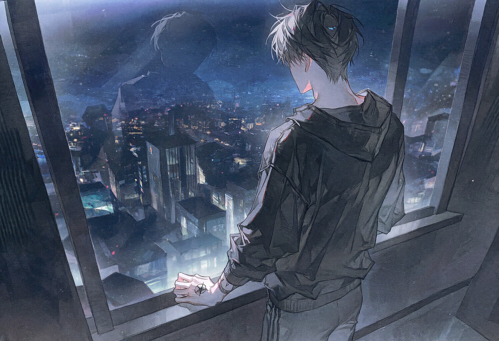
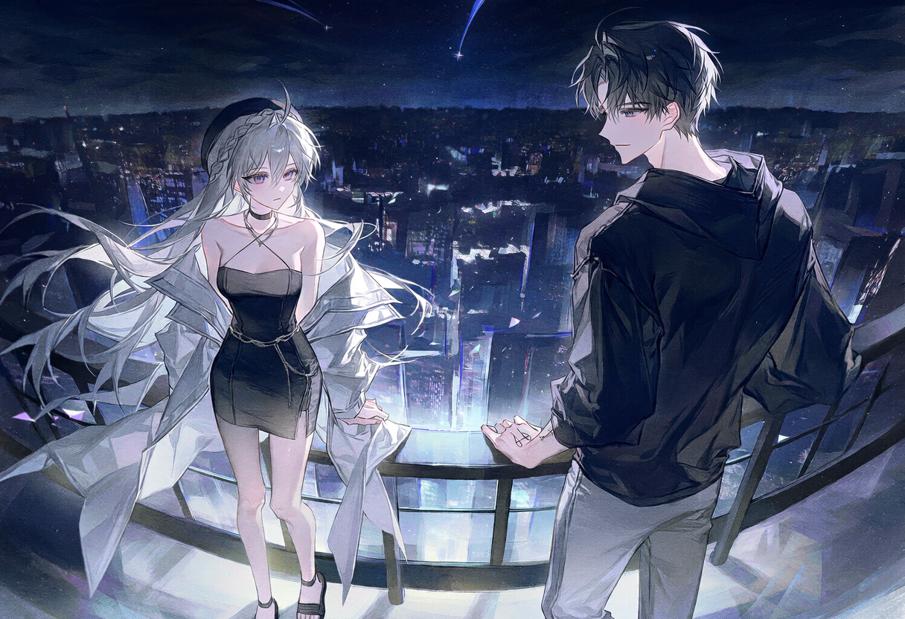

screening log
Lost, Little Lamb
NEW DAY 1

S#1 실내 · 필라델피아 호텔 객실 — 밤
화면이 꺼지고 방 안의 푸른빛이 사라진다. 창밖 도시의 불빛만이 희미하게 공간을 밝힌다. 맨몸에 아로새겨진 문신들이 조명 아래 어른거린다. 용과 해골, 그리고 전장에서 잃은 동료들의 이름.
건 케이스를 연다. 익숙한 손길로 총을 분해하고 부품 하나하나를 닦는다. 기름 냄새가 옅게 퍼지고, 금속이 맞물리는 서늘한 소리만이 정적을 깬다. 복잡한 머릿속을 비우고 눈앞의 감각에만 집중하게 만드는 의식. 찰칵, 찰칵. 기계적인 소음이 날카로운 신경을 조금씩 무디게 만든다.

통유리 너머로 필라델피아의 야경이 펼쳐진다. 저 수많은 불빛 아래 그녀는 어디에 있을까. 악마가 쥔 목줄에 묶인 유령이라면. 상대가 까다로울수록 사냥의 가치는 올라가는 법이다.
진동이 짧게 울린다. 사진 한 장과 짧은 문장. 필라델피아 미술관 앞, 20분 전. 인파 속에 섞인 흐릿한 형체. 허리까지 내려오는 곧은 백발과 특유의 실루엣은 틀림없었다. 죽었다던 여자가 아무 일도 없었다는 듯 밤거리를 거닐고 있었다.
CUT TO —
S#2 실외 · 필라델피아 밤거리 — 밤
맹수의 포효 같은 엔진음이 좁은 주차장을 뒤흔든다. 라디오를 끄고 창문을 살짝 내린다. 도시의 소음과 서늘한 밤공기가 밀려 들어온다. 신호등의 붉은빛이 얼굴 위로 스쳐 지나간다.
잊고 있던 사냥 본능이 피의 가장 깊은 곳에서부터 깨어나는 감각. 그 감각은 위험하면서도 지독하게 달콤했다.
CUT TO —
S#3 실외 · 필라델피아 미술관 계단 — 밤
인파의 가장자리, 난간에 기대어 미동도 없이 도시를 내려다보는 형체. 바람에 흩날리는 긴 백발, 어둠 속에서도 유독 하얗게 보이는 원피스. 주변의 활기와 완벽히 분리된, 고독하고 서늘한 섬 같았다.

곧장 다가가는 대신 방향을 살짝 틀어 난간의 다른 한편에 선다. 후드 모자가 얼굴에 짙은 그늘을 드리우고, 그늘 아래 푸른 눈동자만이 형형하게 빛난다. 먼저 움직이는 쪽이 지는 게임. 그는 이 숨 막히는 긴장감을 누구보다 잘 알고, 또 즐기는 남자였다.
마침내 느리고 나른한 동작으로 몸을 일으킨다. 뚜벅, 뚜벅. 그녀가 돌아보기도 전에 등 뒤에 멈춰 선다. 자신의 그림자가 그녀의 하얀 실루엣을 완전히 집어삼키는 것을 내려다본다.
ETHAN
Lost, little lamb?
길 잃었어, 어린 양?
그녀가 올려다본다. 그리고 고개를 갸웃한다. 누구. 미소가 순간 굳는다. 낯선 이를 보는 것처럼 맑고 투명한 눈. 감정의 동요도, 숨기려는 기색도 없다. 정말로 전부 잊어버린 건가. 자신을 고용했던 것도, 이용했던 것도, 제 본명을 속삭였던 그 밤까지도.
분노와 집착이 허무하게 길을 잃는 감각. 하지만 동시에, 백지상태가 된 그녀를 마주하자 뒤틀린 소유욕이 고개를 든다. 아무것도 기억하지 못한다면 처음부터 다시 시작하면 그만이었다. 이번에는 자신이 주도권을 쥔 채로.
ETHAN
(눈높이를 맞추며)
Come on, sweetheart. You wound me. How could you forget a face like this?
이러기야, 자기. 상처받는데. 어떻게 이런 얼굴을 잊을 수가 있어?
장난스럽게 윙크하지만 미소는 눈에 닿지 않는다. 허리를 펴며 그녀의 옆에 나란히 선다. 짤깍, 라이터의 마찰음이 고요한 밤공기를 가른다. 희뿌연 연기가 바람을 타고 흩어진다.
ETHAN
Just kidding. We haven't met. Thought I'd play the hero for a night.
농담이야. 우리 초면이지. 하룻밤 정도는 영웅 놀이 좀 해볼까 했지.
ETHAN
Ethan. That's my name. And you are...?
에단. 내 이름. 당신은…?
이 유령이 자신에게 어떤 이름을 내어줄지, 어떤 거짓말을 들려줄지. 그는 참을성 있게 기다렸다. 사냥은 이제 막 시작되었을 뿐이었다.